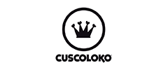

O II CãogressoS2 Nordeste acontecerá no dia 07 de julho de 2019, no Hotel Imirá Plaza (via costeira), em Natal/RN e trará um dia inteiro de troca de conhecimentos de alta relevância e de relacionamento entre pessoas e profissionais que amam animais. Nesse ano contaremos também com dois auditórios profissionais, com disseminação de conhecimento especializado. Oferecemos quatro tipos de inscrição e certamente uma delas se encaixa perfeitamente no seu perfil. Venha viver um momento memorável conosco! S2
O II CãogressoS2 Nordeste conta com uma programação completa e personalizada de acordo com o interesse de cada público. O objetivo das atividades propostas é proporcionar uma experiência
Pela manhã os “Dogs Vips” chegarão para um dia de socialização no DaycareS2 e poderão levar até 02 tutores para participarem de interações e compartilhamento de experiências de forma exclusivas com os palestrantes.
O ingresso Tutor individual garante a participação no auditório principal, com 03 palestras e muita interatividade, com o que há de mais atual sobre a melhor forma de cuidar dos nossos cães.
Os profissionais da área Veterinária e da área Groom terão auditórios exclusivos com palestras e conteúdos especializados, além de excelente oportunidade de aumentar a cadeia de relacionamento.
Todos os participantes participarão da palestra principal do evento conduzida por Alexandre Rossi e Estopinha. Clique e veja detalhes da programação de cada tipo de inscrição.

